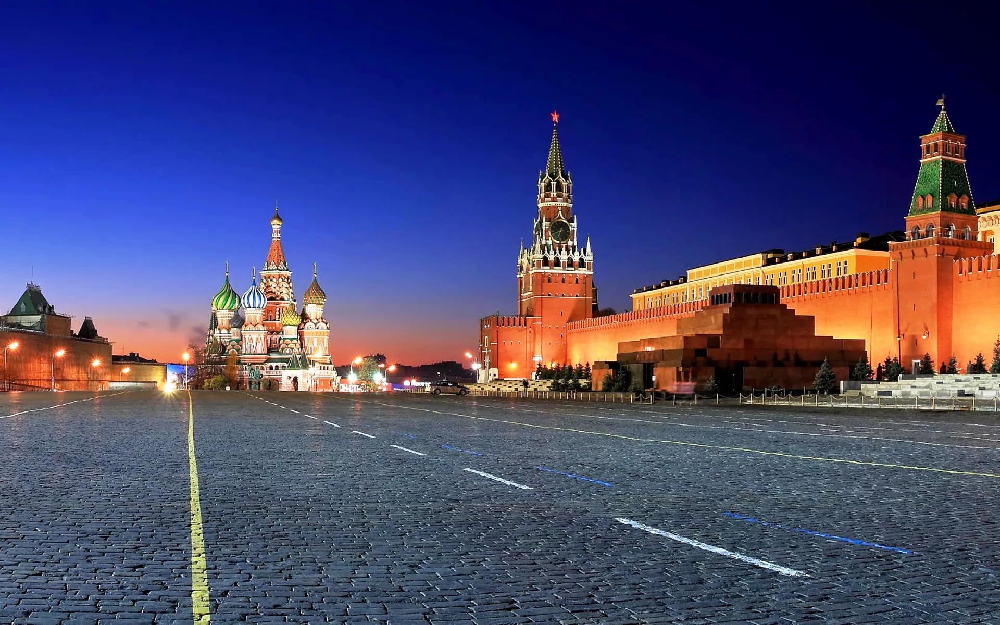
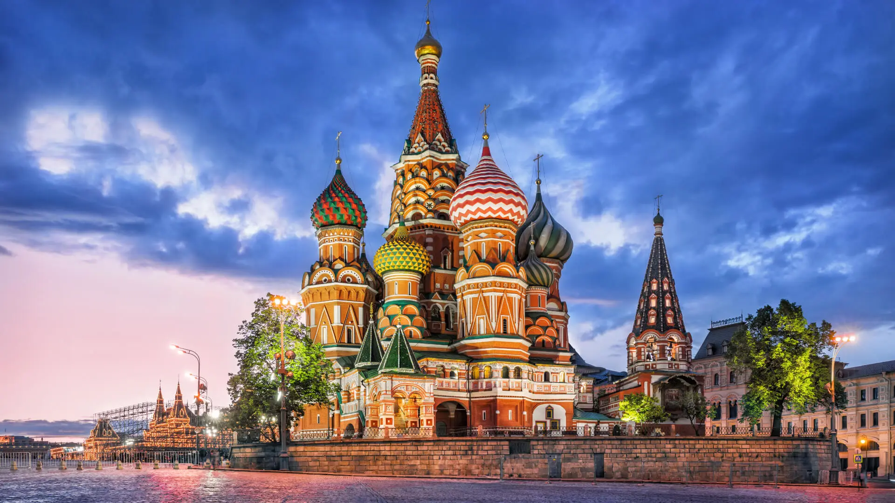

О нашем городе Москва

Город Москва - столица России, город федерального значения, административный центр Центрального федерального округа и центр Московской области. Мегаполис, крупнейший по численности населения город России и её субъект — 13 149 803 человека (2024), что делает Москву 22-й среди городов мира по численности населения. Центр Московской городской агломерации. Самый крупный город Европы по площади и населению. Это огромный мегаполис, который является историческим, политическим и духовным сердцем Российской Федерации
Достопримечательности
- Красная площадь - вымощенное брусчаткой пространство в самом центе Москвы. Расположена она на левом берегу Москвы-реки. Площадь, протянувшаяся на 330 метров, с одной стороны ограничена краснокирпичной кремлевской стеной. А еще с трех сторон она ограждена волшебным собором Василия Блаженного, стилистически сходным с кремлем зданием Исторического музея, созданным в XIX веке архитектором Шервудом, ГУМом - главным универмагом Москвы.
- Храм Василия Блаженного - Главная столпообразная церковь в честь Покрова Божией Матери, с четырёх сторон окружена осевыми церквями, между которыми находятся ещё четыре церкви меньшего размера. Во второй половине XVII века к комплексу была пристроена Шатровая колокольня.
- Кремль - исторический, культурный и религиозно значимый комплекс в центре Москвы. Это древняя крепость с уникальным ансамблем памятников, включённая в список наследия ЮНЕСКО, а также официальная резиденция президента России.
Контакты
Отдельная форма| Красная площадь | Храм василия блаженного режим | Кремль |
|---|---|---|
| Вымощенное брусчаткой пространство в самом центе Москвы | Главная столпообразная церковь в честь Покрова Божией Матери | Исторический, культурный и религиозно значимый комплекс в центре Москвы |
| ул Тверская, д 10. | Красная площадь, 7 | Станция метро 'Охотный ряд' |
| Рабочие часы: круглосуточно | Рабочие часы: 11:00-18:00 | Рабочие часы: 10:00-17:00 часов. Оружейная палата работает по сеансам 10:00, 12:00, 14:30, 16:30. |
|  |  | |